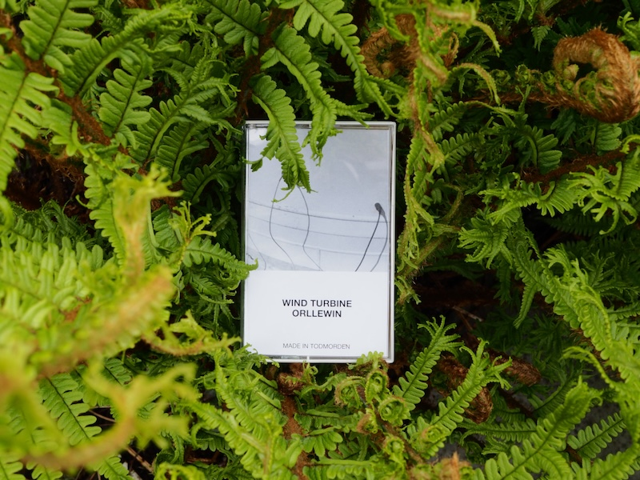
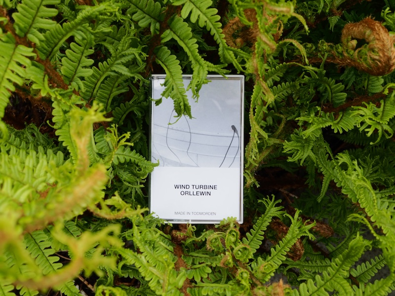

ebct001: wind turbine, orllewin
short-run cassette featuring geophone recordings of wind turbines from Flower Scar Hill and Coal Clough, Todmorden
Digital download and cassette on Bandcamp

a micro label
ebct001: wind turbine, orllewin
short-run cassette featuring geophone recordings of wind turbines from Flower Scar Hill and Coal Clough, Todmorden
Digital download and cassette on Bandcamp
